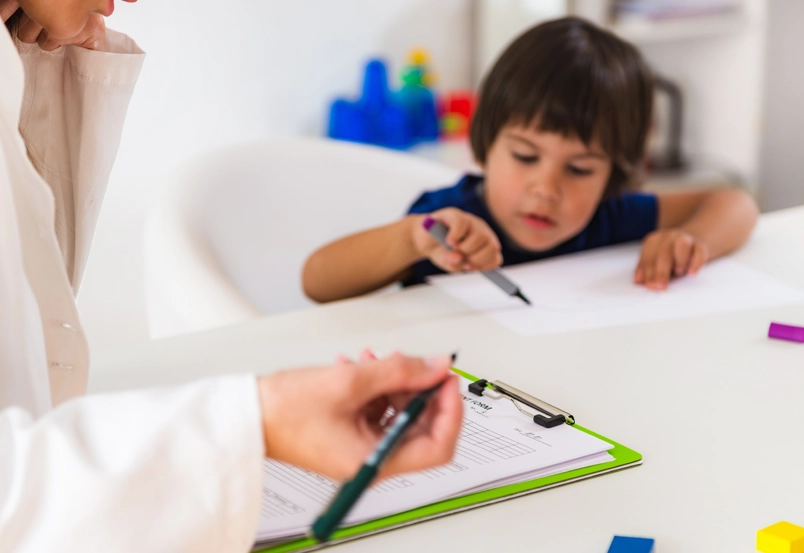
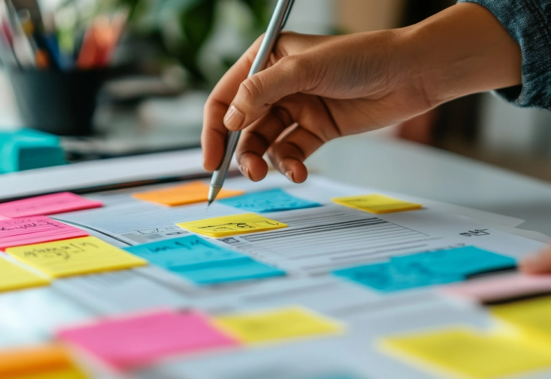
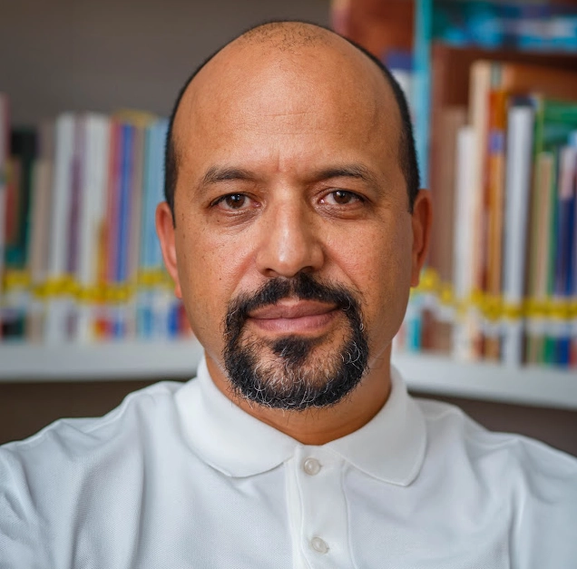
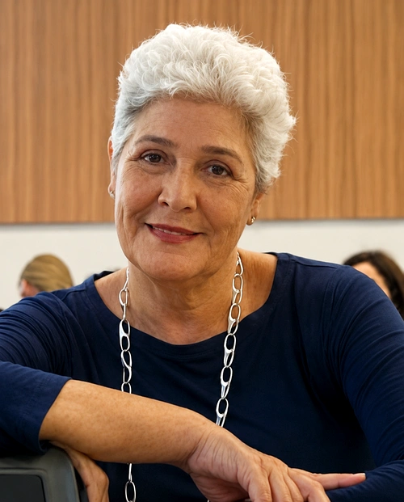

Integração à rotina
compreenda a organicidade que deve existir entre o registro e a prática para que eles se conectem em reflexões e transformações reais no cotidiano.
Pós-graduação · Faculdade Phorte
Aprimore a escrita pedagógica e os diários de bordo com uma rotina de registros intencional e eficiente que qualifica seu trabalho sem afastar você das crianças.
380h · 18 meses · Ao vivo / Online · Curso registrado no e-MEC
“O registro é o mais poderoso instrumento na construção da consciência pedagógica do educador.”
O trabalho pedagógico se constrói a partir da escuta das vozes infantis, do diálogo com as famílias, da reflexão, da criatividade e da investigação. Nesse processo, vivências e narrativas ganham forma em documentações que acompanham o desenvolvimento das crianças e também do educador.
A Pós-graduação em Registro e Documentação Pedagógica foi concebida para qualificar essa produção, tornando-a um instrumento intencional de análise, aprimoramento e pesquisa.
Conheça a formaçãoDocumentação pedagógica
Assista ao vídeo e conheça a proposta.
compreenda a organicidade que deve existir entre o registro e a prática para que eles se conectem em reflexões e transformações reais no cotidiano.
entenda como equilibrar objetivo e realidade para filtrar o que acontece e elaborar registros que foquem em reflexões planejadas.
favoreça um olhar que busca experiências de aprendizagem de forma clínica, com base no que você busca alcançar com seus registros.
organize intenções, observações e reflexões para narrar os acontecimentos do seu cotidiano com clareza e riqueza de recursos.
Equipe formada por profissionais com vasta formação e experiência em registro, diário de bordo, gestão escolar e coordenação pedagógica.
Aulas que conectam teoria e prática para orientar o planejamento das atividades educativas com foco em decisões pedagógicas direcionadas.
Uma formação que orienta análises aprofundadas de registros, práticas e acontecimentos para promover um desenvolvimento contínuo da prática pedagógica.
Em apenas 8 módulos você transformará a visão que você tem sobre os bebês e as crianças pequenas
Explore os fundamentos para criar registros pedagógicos que capturem a realidade da sala de aula. Compreenda as melhores estratégias para documentar o desenvolvimento dos pequenos e aplique esses conceitos no seu cotidiano educacional.

Saiba quais são as regulamentações e requisitos legais relacionados ao registro do trabalho pedagógico. Este módulo garante que seus registros atendem as exigências legislativas da área da educação.
Entenda os princípios do designer para criar documentos pedagógicos informativos e visualmente atraentes. Descubra técnicas para melhorar a apresentação dos seus registros, tornando-os mais lúcidos na apresentação para pais, colegas e outros profissionais da educação.

Conheça os cinco principais organizadores do desenvolvimento humano e como operam na protoinfancia para construir os processos de gênese, organização, estruturação e transformação evolutiva do indivíduo e de suas especificidades.
Aprenda a criar e a utilizar o diário de bordo para refletir sobre sua prática, registrar observações significativas e planejar melhorias na sua atuação docente.

Desenvolva mini-histórias que registram e destacam as experiências e conquistas dos pequenos. Descubra como essas narrativas curtas podem ser usadas para refletir sobre o aprendizado e proporcionar uma visão rica e detalhada do desenvolvimento infantil.
Construa portfólios pedagógicos que evidenciam as habilidades e conhecimentos dos alunos, oferecendo uma visão holística do desenvolvimento deles
Saiba como estruturar relatórios que, além de documentar o crescimento das crianças, proporcionam reflexões que refinam sua prática pedagógica.
Quer saber mais sobre os módulos?
Quero me especializarEla se destina a profissionais graduados que trabalham ou desejam atuar com:
Para a conclusão do curso, é necessário:
Cronograma das aulas:
As aulas ocorrerão dois sábados por mês, das 8h às 14h, na modalidade ao vivo/online (síncronas). Em caso de feriados no final de semana, poderá haver três encontros no mês, sendo o ajuste realizado no mês anterior ou posterior.
Coordenação:

CoordenaçãoPós-Doutor em Psicologia da Educação, Doutor em Lingua Portuguesa, Mestre em Ciência da Informação e Documentação, Bacharel em Letras - Português e Literaturas de Língua Portuguesa e Pedagogo em Gestão Escolar. Especialista em PROEJA, Letramento e Alfabetização e Supervisão Escolar.
Atualmente é Coordenador Pedagógico na Cidade de São Paulo e Coordenador dos cursos de graduação em Pedagogia e pós-graduação em Educação Infantil e Registro e Documentação Pedagógica da Faculdade Phorte. Suas principais áreas de atuação são: formação de professores, assessoramento pedagógico e gestão escolar.

CoordenaçãoOs valores e as condições da turma precisam ser confirmados para esta especialização.
A copy vinculada ao card apresenta valores de outra especialização.
Inscrições até 28 de outubro
Garantir minha vagaqEste formulário demonstra a interface. Os dados não são enviados nem armazenados.